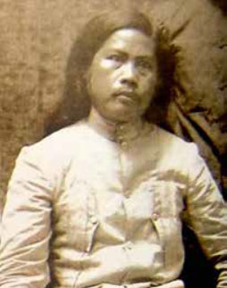
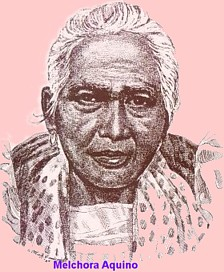

Andres Bonifacio
Known as the Father of the Philippine Revolution,
Bonifacio has strong connections to Caloocan where significant
Katipunan activities took place.
Why is Bonifacio Statue Located at Caloocan
The iconic Andrés Bonifacio Monument is located in Caloocan, rather than his birthplace of Tondo,
because the monument marks the general vicinity where Bonifacio and the
Katipuneros gathered to begin the Philippine Revolution in 1896.
This historical location in Caloocan marks a pivotal moment in the nation's history, symbolizing the shift from peaceful reform to armed struggle against Spanish rule.

Macario Sakay
A revolutionary leader who continued the fight for
independence even after the Philippine-American War.
Sakay’s presence in Caloocan inspired many freedom fighters.
Why is Macario Sakay has a History at Caloocan
Macario Sakay has a history at Caloocan primarily through his guerrilla activities against
American forces and the subsequent establishment of the Repúblika ng Katagalugan.
He led armed resistance in the surrounding provinces of Rizal, Batangas, Laguna, and Cavite,
where he operated, leading to U.S. forces concentrating villagers in hamlets to cut off his support.
While his direct activities were focused in the Southern Tagalog region, Caloocan was considered a potential base for his operations.

Melchora Aquino (Tandang Sora)
Melchora Aquino was a Filipino revolutionary. She became known as "Tandang Sora" because of her old age during the Philippine Revolution. She was also known as the
"Grand Woman of the Revolution" and the "Mother of Balintawak"
Melchora Aquino in Caloocan
She was born in what was then Banlat, a barrio of Caloocan in 1812The area where she was born is now part of Quezon City, and a national shrine was built there to honor her legacy.